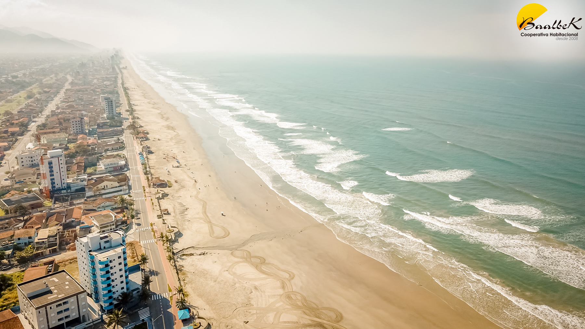
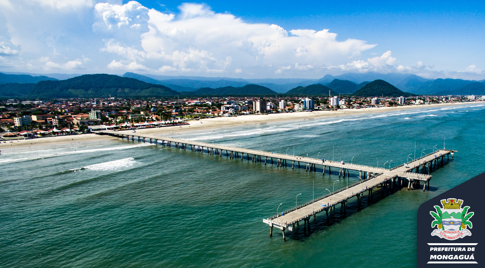
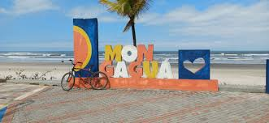

MONGAGUÁ
História de Mongaguá
Mongaguá, localizada no litoral sul de São Paulo, tem suas raízes na cultura Tupi-Guarani, significando "água pegajosa". Originalmente território indígena e de descanso para viajantes no século XVI, a cidade emancipou-se de Itanhaém em 7 de dezembro de 1959. O desenvolvimento foi impulsionado pela Rodovia Padre Manoel da Nóbrega, consolidando-se como estância balneária em 1977.
Curiosidades
Mongaguá, no litoral sul paulista, destaca-se por abrigar a maior plataforma de pesca em mar aberto do mundo e o poço das antas, um grande piscinão natural. Com nome tupi que significa "água pegajosa" (referência aos mangues), a cidade de 13 km de praias foi emancipada em 1959, sendo um destino popular a apenas 97 km da capital.
Pontos Turísticos
Principais pontos
- Plataforma de Pesca Amadora: Maior plataforma de pesca em concreto do mundo, avança 400 metros mar afora.
- Poço das Antas: Área verde com cachoeiras e piscinas naturais, ideal para banhos e contato com a natureza.
- Parque Ecológico A Tribuna: Zoológico que abriga animais silvestres, focado em educação ambiental.
- Morro da Padroeira (Igreja Nossa Sra. da Conceição Aparecida): Conta com uma grande estátua e uma trilha/escadaria de 143 degraus, oferecendo uma vista panorâmica.
- Feiras de Artesanato: Localizadas no Centro, Vera Cruz e Plataforma, ideais para compras e artesanato local.
- Praças Centrais: Praça Jacoub Koukdjian, Fernando Arens e a Praça Dudu Samba, onde está a estátua de São Pedro Pescador.
- Estátua de Iemanjá: Ponto de visitação localizado próximo à Plataforma de Pesca.
- Praias: Destaque para a Praia do Centro, Praia Agenor de Campos, Itaóca e Vera Cruz.


